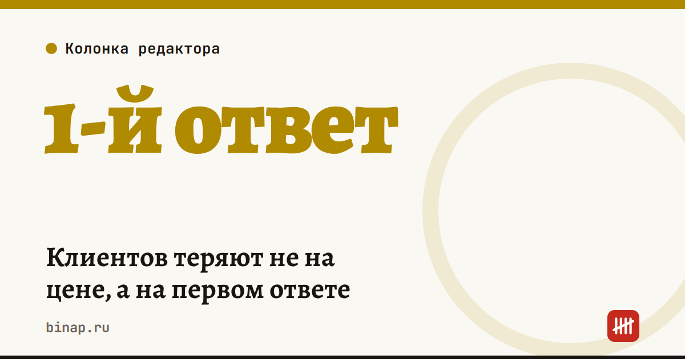

Клиентов теряют не на цене, а на первом ответе

За 15 лет в продажах я видел одну и ту же картину. Владелец бизнеса думает, что проиграл клиента из-за цены. А клиент просто написал в три компании и купил у той, которая первой ответила по делу.
Коротко
- Клиент, который пишет в несколько компаний, чаще выбирает ту, что ответила первой и по делу, — а не самую дешёвую.
- Малый бизнес медленнее всего на первом касании: заявки вечером, сообщения, пока владелец на объекте.
- Начните с замера: через сколько вы отвечаете на последние 10 заявок.
- Три бесплатных шага: шаблоны ответов, дежурный на время, когда вы заняты, и автоответ с конкретным временем.
Сроки, изменения и разборы для ИП и самозанятых — каждое утро в Telegram и MAX. Подпишитесь, чтобы не пропустить.
Малый бизнес почти всегда медленный на первом касании. Заявка приходит вечером, ответ — утром. Сообщение в мессенджере висит, пока хозяин на объекте. А клиент в это время уже договорился с конкурентом.
Как измерить скорость первого ответа
- Откройте последние 10 заявок — из мессенджеров, почты, с сайта, с карт.
- Для каждой запишите время, когда пришла заявка, и время первого ответа по делу — не «спасибо, ответим», а с ценой, сроком или вопросом о задаче.
- Посчитайте среднее и отдельно — сколько заявок ждали дольше часа.
- Отметьте, какие из этих клиентов купили. Обычно картина видна уже на десяти заявках.
Три вещи, которые можно сделать на этой неделе
Шаблоны ответов. Заготовьте три ответа: цена, сроки и «перезвоню в 15:00». Скорость важнее идеального текста. Пример:
Добрый день! Стоимость [услуги] — от [цена], точнее скажу после двух вопросов: [вопрос 1] и [вопрос 2]? Если удобнее голосом — перезвоню сегодня в [время].
Дежурный. Назначьте, кто отвечает, когда вы заняты, — сотрудник, помощник, член семьи. Ему хватит шаблонов и списка частых вопросов.
Автоответ с конкретным временем. «Получили заявку, ответим до 10:00» лучше тишины. Если частых вопросов много, часть ответов можно поручить нейросети — но только по вашей базе знаний и с передачей сложных вопросов человеку.
Цену снижать проще всего. Но начните с того, что бесплатно.
Как понять, что стало лучше
Сравните через месяц две цифры: среднее время первого ответа и долю заявок, которые дошли до встречи, расчёта или покупки. Как собрать всю воронку и найти слабый этап, — в статье воронка продаж для малого бизнеса. Что говорить, когда дозвонились, — в разборе скрипт первого звонка.
Частые вопросы
Какое время ответа считать хорошим? Универсальной нормы нет. Сравнивайте себя с собой и с конкурентами: напишите им как клиент и засеките, через сколько ответят.
Не отпугнёт ли автоответ? Нет, если в нём есть конкретное время и вы его соблюдаете. Отпугивает тишина и шаблон «ваше обращение очень важно для нас».
Можно ли поручить первый ответ нейросети? Можно для частых вопросов — режим работы, доставка, оплата. Цены, сроки и обещания пусть подтверждает человек: нейросеть может их придумать.